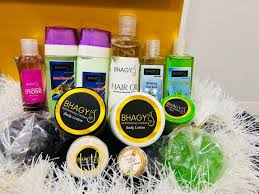
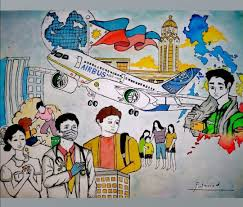
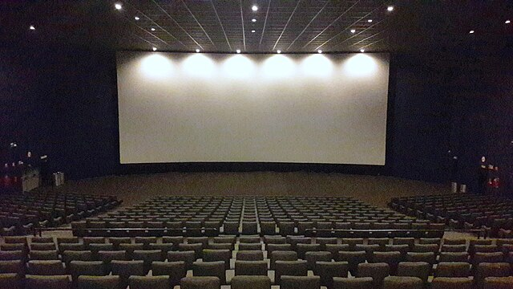
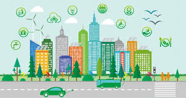
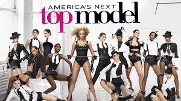
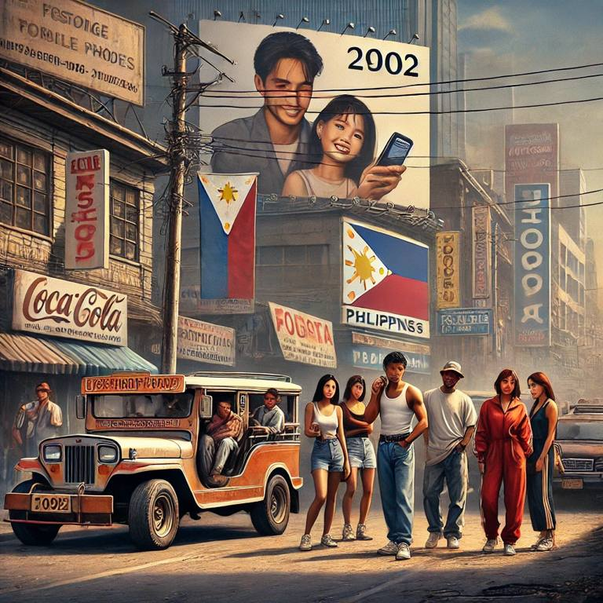
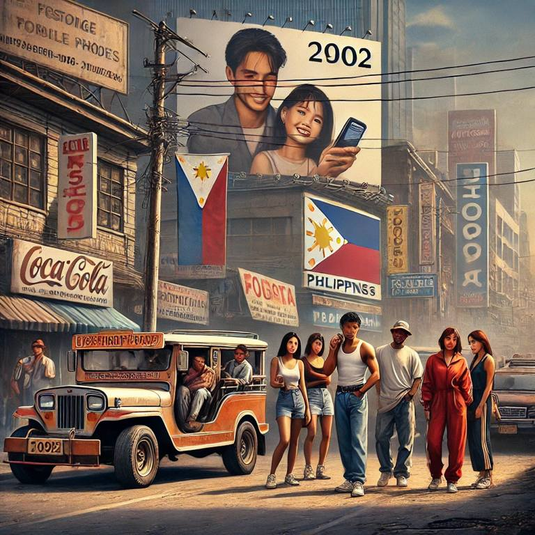

Credit to: Moobly TV
Year 2000-2002
Melodramatic Media: Telenovelas like Pangako Sa 'Yo created intense emotional engagement in viewers. (Wikipedia)

Western Beauty Standards: Whitening products like glutathione became a must-have, reflecting colonial mentality. (VCU)

Reality TV Boom: Shows like Pinoy Big Brother made ordinary people into instant celebrities. (PEP)

Mall Culture: Malls became urban centers for socialization and recreation, driven by consumerism. (TNI)

24/7 Lifestyle: Growing tech demands blurred work-life boundaries, as shown by mobile phones and social media usage. (Forbes)

Mobile Revolution: SMS texting culture boomed, turning the Philippines into the "texting capital of the world." (Uy-Tioco)

K-pop Invasion: K-pop bands began gaining a Filipino fan base, blending global entertainment. (ANN)
Year 2003-2004

Nostalgic Emotions: Romantic comedies with star-studded casts like Got 2 Believe tugged at heartstrings. (Wikipedia)

Celebrity Influence: Slim, fair-skinned celebrities became icons, affecting diet and fashion choices. (New Port Academy)
OPM Dominance: Bands like Bamboo and Eraserheads dominated the music scene with patriotic rock anthems. (Wikipedia)
Urban Sprawl: The rise of condominiums and townships reflected urbanization, especially in Metro Manila. (Bed&Go)

Fast-paced Lifestyle: Social media like Facebook accelerated social interactions and shaped identities. (Medium)

Internet Accessibility: Internet cafés became ubiquitous, especially in urban areas. (Wikipedia)

OFW Impact: Overseas Filipino workers spread Filipino pop culture, impacting global recognition of local talent. (SIT)
Year 2005-2006

Emotions in Advertising: Family-oriented ads, such as those from Jollibee, capitalized on Filipino sentimentality. (The Catalyst)

Youth-driven Trends: The popularity of streetwear and body piercings reflected rebellion and individuality among the youth. (IMG)

Festival Culture: Events like Masskara featured local and international masks, blending global influences. (Guide)

Digital Space: Social media began to replace traditional gathering spaces, leading to the creation of online communities. (Maryville)
Compressed Time: People began multitasking with the help of tech gadgets, balancing work, school, and social life. (LinkedIn)

Tech for Status: Owning high-end mobile phones became a status symbol. (LinkedIn)

Hollywood Blockbusters: Filipino cinemas showcased global blockbusters like Harry Potter and Twilight, driving Western entertainment preferences. (Wikipedia)
Year 2007-2008

Hyper-commercialism: Emotions were exploited for marketing, with family and relationships being core themes. (Jackelyn Gill)

Reality TV Influence: Shows like The Biggest Loser reinforced body standards and the fitness craze. (Blue Ridge)
Viral Marketing: Brands capitalized on performance art, using viral dances for product advertisements. (FasterCapital)

Urban Ghettos: Marginalized communities formed in the wake of rapid urbanization, highlighting class divides. (ScienceDirect)

No Downtime: 24-hour establishments like convenience stores and fast food chains contributed to the fast-paced lifestyle. (Xenia)

Smartphone Evolution: Introduction of smartphones revolutionized communication and internet access. (Textedly)
Work Migration: Overseas Filipino Workers continued to have a significant impact on Philippine economy and culture. (MPI)
Year 2009-2010
Emotional Engagement with Politics: Politicians capitalized on emotions, with campaigns built on melodrama (e.g., Joseph Estrada). (Wikipedia)

TV-driven Body Ideals: Teleseryes influenced body ideals, particularly thinness and clear skin. (LLU)
Collaborative Performances: Cross-collaborations between local and international artists became more common (e.g., Lea Salonga). (Tony Howell)
Gated Communities: Private spaces began taking precedence over public ones, reflecting socio-economic divisions. (Research Gate)

Fragmentation of Time: Tech advances created fragmented schedules, where people multitasked more frequently. (Clockwise)
Mobile Commerce: The rise of mobile shopping and online stores changed the retail landscape. (LinkedIn)

Global Recognition: Local talent, like Manny Pacquiao, gained international fame, showcasing Filipino excellence. (Britannica)


 
